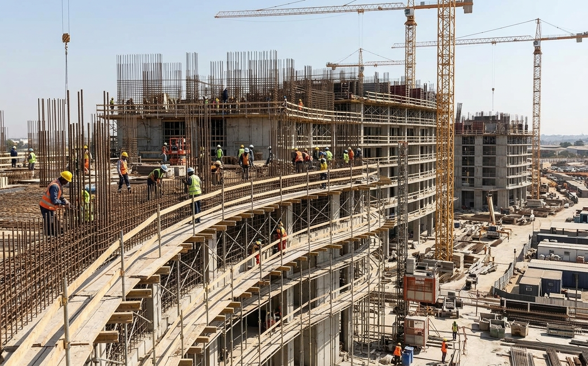
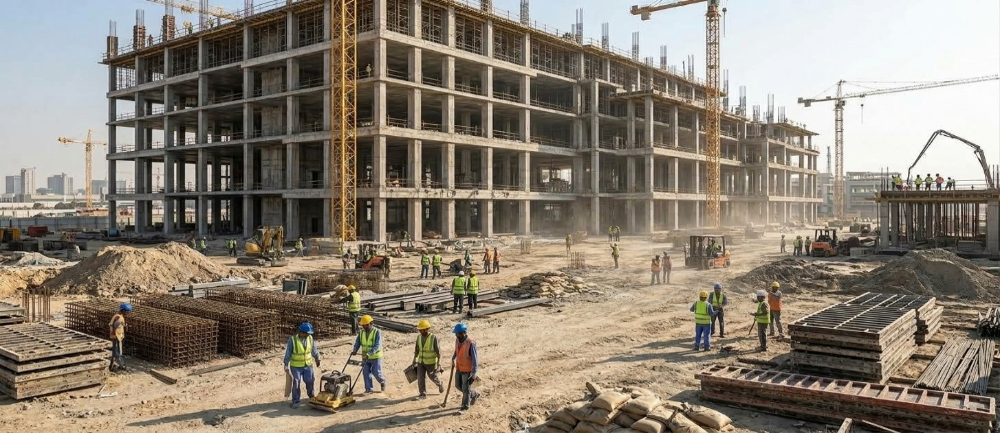
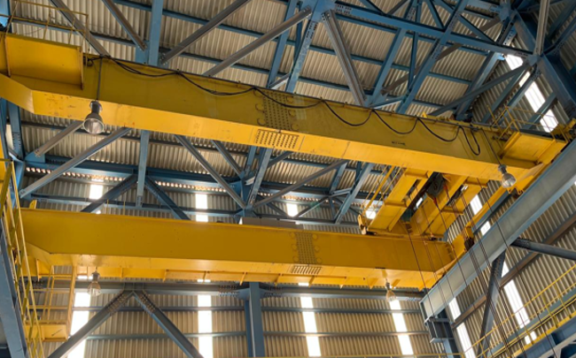

خبرة تتجاوز 18 سنة
معرفة إنشائية وهندسية عملية نطبّقها في كل مشروع، مدعومة بالخبرة المجمّعة لفريق العمل.
المملكة العربية السعودية
خبرة تتجاوز 18 سنةخبرة مجمّعة لفريق العمل
مقاولات ودعم مشاريع في الأعمال المدنية، ونقل وتأجير المعدات الثقيلة، وتركيب الرافعات، وأنظمة مكافحة الحريق.
جاهزون لمشاريعكم
إس إف ماسيف شركة مقاولات ودعم مشاريع مقرها المملكة العربية السعودية. ننسّق نطاقات عمل عملية حسب احتياج كل مشروع، مع التركيز على السلامة وجودة التنفيذ والالتزام بالمواعيد.

عن إس إف ماسيف
نخدم المشاريع السكنية والتجارية والصناعية ومشاريع البنية التحتية من خلال أربعة أقسام. من تجهيز الموقع وأعمال البناء إلى نقل المعدات والتركيبات الصناعية، تنسّق فرقنا نطاق العمل والأفراد وجبهات العمل بعناية.
يقوم أسلوب عملنا على التواصل الواضح، والإشراف الكفء، والاهتمام بجودة التنفيذ، والتنسيق مع متطلبات مشروع العميل.
تعرّف على أقسام خدماتنالماذا إس إف ماسيف؟
معرفة إنشائية وهندسية، وعمل ميداني منضبط، ودعم مرن للمشاريع حسب المتطلبات المتفق عليها.
معرفة إنشائية وهندسية عملية نطبّقها في كل مشروع، مدعومة بالخبرة المجمّعة لفريق العمل.
قدرات متخصصة في الأعمال المدنية والمباني والبنية التحتية.
تحكّم عملي في تسلسل الأعمال والتنسيق وتحديات الموقع.
فحص منظّم وضبط للجودة في جميع نطاقات الأعمال المسندة إلينا.
السلامة جزء من التخطيط ومن العمل اليومي.
نعمل كمقاول رئيسي، أو مقاول أعمال مدنية، أو مقاول باطن متخصص، أو شريك تنفيذ، حسب نطاق العمل المتفق عليه.
تواصل واضح مع العملاء والاستشاريين ومقاولي الباطن والموردين.
تركيز على الموارد والجودة والجدول الزمني وإنجاز المشروع بنجاح.
خدماتنا
اختر الخدمة للتعرّف على نطاقها ومناقشة متطلبات مشروعك.

01أعمال مدنية · مبانٍ · بنية تحتية
من تجهيز الموقع والأساسات إلى أعمال المباني والتشطيبات والأعمال الخارجية.
عرض الخدمة ↖ 02
02نقل · معدات
لوبد وسطحات ودينا وونشات، إضافة إلى تأجير المعدات الثقيلة حسب التوفر.
عرض الخدمة ↖
03أنظمة الرافعات العلوية EOT
معاينة الموقع، وقضبان مسار الرافعة، والتجميع الميكانيكي، والتمديدات الكهربائية للرافعة، والاختبار والتسليم.
عرض الخدمة ↖ 04
04الحماية من الحريق
تنسيق أعمال التركيب حسب نطاق المشروع للمواسير والرشاشات والحنفيات وما يرتبط بها.
عرض الخدمة ↖أعمال مدنية · مبانٍ · بنية تحتية
تشمل النطاقات الممكنة مراجعة ما قبل التنفيذ والتجهيز للموقع؛ والرفع المساحي والتنظيف والحفر والتسوية وحفر الخنادق والردم والدك؛ والأساسات والخرسانة المسلحة والشدات وتركيب حديد التسليح؛ والأعمال الإنشائية وأعمال المباني؛ والبلوك والعزل المائي والدهانات والأسقف والتشطيبات؛ وتطوير المواقع الخارجية والرصف والتصريف وخنادق الخدمات؛ والأساسات الصناعية والإصلاحات؛ إضافة إلى دعم أعمال التمديدات الكهربائية ضمن قسم الأعمال المدنية.
قد تشمل الأعمال الكهربائية المواسير والمجاري الكهربائية، وكابلات القوى والتحكم، ولوحات التوزيع والإنارة، والتأريض والربط، ودعم الفحص والاختبار، بالتنسيق مع المستندات المعتمدة والمسؤوليات المحددة.
تعرّف على الإنشاءات المدنيةنقل · معدات
تشمل طلبات النقل نقل المعدات المناسبة باللوبد، ونقل البضائع بالسطحات، والتوصيل بالدينا، والنقل والرفع بالونش حسب الحمولة وظروف الموقع. وتشمل طلبات التأجير الشيولات، والحفارات المجنزرة أو ذات العجلات، والبوبكات، والمداحل، والباكهو، والمولدات، حسب التوفر والشروط المتفق عليها.
يشمل التخطيط مراجعة النطاق والحمولة، والتحقق من المسار والوصول، وتخصيص المركبة أو المعدة، والفحص قبل الإرسال، وتنسيق التحميل والتثبيت، ومتابعة الرحلة، والتنزيل والتسليم.
تعرّف على النقل والتأجيرأنظمة الرافعات العلوية EOT
قد يشمل دعم التركيب مراجعة جاهزية الموقع والمسار؛ والتجهيز وتهيئة منطقة العمل؛ وتركيب القضبان وضبط استقامتها واللحام المحدد وتنسيق الفحص؛ وتجميع الجسر والعربات الطرفية والترولي والونش؛ وقضبان التوصيل أو نظام الفستون، وكابلات القوى والتحكم، واللوحات، والتحكم المعلّق أو اللاسلكي، والتأريض والربط؛ والفحوصات الوظيفية للحدود وأنظمة السلامة؛ والاختبار وتنسيق التشغيل والسجلات والتسليم.
يتم تأكيد أنواع الرافعات ومسؤوليات التشغيل وفق مستندات الشركة المصنّعة ونطاق المشروع المعتمد والجهات المتخصصة المطلوبة والإجراءات المعمول بها.
تعرّف على تركيب الرافعاتالحماية من الحريق
حسب المخططات المعتمدة والنطاق المتفق عليه، قد يشمل الدعم مواسير مكافحة الحريق والدعامات والقطع؛ وتنسيق تركيب الرشاشات؛ وصناديق الحريق والبكرات وتوصيلات الحنفيات؛ وغرفة مضخات الحريق وتوصيلات مياه الحريق؛ ونقاط الحريق وتركيب الطفايات؛ والتنسيق مع مختصي إنذار الحريق والكهرباء.
يجب تأكيد التصميم وموافقات الجهات المختصة والتراخيص والاختبارات المتخصصة والتشغيل والشهادات مع الجهات المخوّلة لكل مشروع. لا تمثّل هذه الصفحة ادعاءً بالحصول على اعتماد أو شهادة محددة.
تعرّف على أنظمة مكافحة الحريقخدماتنا في جدة والمملكة
إس إف ماسيف شركة مقاولات عامة في جدة، نقدّم أعمال العظم والتشطيبات والكهرباء والسباكة وتأجير ونقل المعدات الثقيلة وتركيب الرافعات وأنظمة مكافحة الحريق في جدة ومكة والمدينة وينبع والرياض والدمام.
نطاق التغطية
مقر إس إف ماسيف في المملكة العربية السعودية، ونخدم المشاريع في مختلف مناطق المملكة. يتم تأكيد توفر الخدمة والتجهيز لكل طلب حسب النطاق وظروف الموقع والجدول الزمني والموارد.
تحقّق من التغطية لمشروعكخبرات فريق العمل
تتضمن ملفات الشركة مراجع خبرة في قطاعات الطاقة والمرافق والبنية التحتية والقطاعين التجاري والصناعي.
هذه مراجع خلفية فقط. لم يتم التحقق من المشاركة التعاقدية لإس إف ماسيف أو الأسماء الرسمية للمشاريع أو نطاقاتها أو تواريخها أو الأدوار الفردية أو أذونات الصور، ولا تُعرض على أنها مشاريع نفّذتها إس إف ماسيف.
ناقش متطلباتكمن الأمثلة الواردة: ميناء وبنية تحتية مدينة جازان الاقتصادية، ومشروع الباثق لشركة ناتبت في ينبع.
تشمل المراجع خبرات في محطات التحويل ومشاريع المياه، مثل محطة تحويل فروسية ومشروع ينبع 4 المستقل للمياه.
من الأمثلة: حظائر صيانة الطائرات في مطار الملك عبدالعزيز الدولي، ومركز القيادة ومركز الشرطة الثاني في نيوم.
الصحة والسلامة والبيئة والجودة
نخطط وفق أنظمة الموقع ومتطلبات المشروع والضوابط المناسبة لنطاق العمل.
تخطيط الأعمال، وتحديد مخاطر الموقع، وتنسيق الضوابط مع فرق المشروع.
الالتزام بالمخططات والمواصفات المعتمدة، مع الاهتمام بسجلات الفحص والتسليم.
احترام المتطلبات البيئية للموقع، وتطبيق النظافة العامة وضوابط المخلفات.
تنسيق النطاق والجدول الزمني والأفراد والمعدات من خلال تواصل واضح.
الوظائف
للاستفسار عن الوظائف، تواصل مع فريق الاستفسارات العامة.
تواصل مع إس إف ماسيف
أرسل لنا نطاق العمل والموقع والجدول الزمني المطلوب، وسيراجع فريقنا طلبك ويتواصل معك لمناقشة الخطوات التالية.